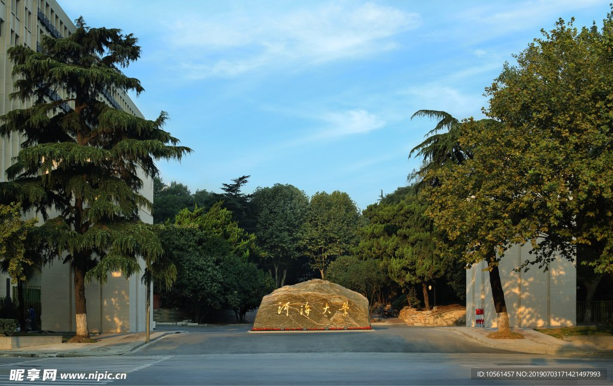

源起 · 1915
一滴水，
从太白顶出发
淮河发源于桐柏山太白顶。山脊上的一线清泉，穿过云雾，向东北流去。
1915 年，张謇等创办河海工程专门学校。中国水利高等教育，也从这里发源。

百十河海 · 向海而生
HOHAI UNIVERSITY · EST. 1915
源起 · 1915
淮河发源于桐柏山太白顶。山脊上的一线清泉，穿过云雾，向东北流去。
1915 年，张謇等创办河海工程专门学校。中国水利高等教育，也从这里发源。
奔流 · 1924
水穿过山谷，汇入支流。一条河真正成为一条河，是在它学会汇聚之后。
1924 年，学校改名为河海工科大学，成为中国第一所培养水利人才的高等工科大学。
汇流 · 1928
河到了城下，速度慢下来。它开始记住岸边的灯，和灯下的人。
1928 年，学校并入国立中央大学并设水利系。水利教育的血脉，在综合大学里继续奔流。
汇聚 · 1952
河汊散开，芦苇起伏。淡水与咸水相遇的地方，是所有支流重新汇合的地方。
1952 年全国院系调整，多所高校水利系汇聚南京，华东水利学院由此成立。
向海 · 1985
一滴水只有汇入大海，才知道自己原来可以这么大。
1985 年，恢复河海大学校名。从专门学校到综合性水利大学，七十年走成一条河。
CODA · 尾声
水利工程、环境科学与工程进入国家一流学科建设序列。
从一滴水，到一条奔涌向海的河。
FIVE CHAPTERS · 河海五章
横向拖拽，或使用方向键。
每一块，都是这条河的一段河床。
CULTURE · 文化
艰苦朴素
实事求是
严格要求
勇于探索
MOTTO · 校训水利万物而不争。学会做水，是河海人的第一课。
不恋一时平缓，始终朝更开阔的地方去。
治水是百年的事。河海人习惯把目光放得很长。
校风 · 献身 求实 负责
PEOPLE · 人物
1853 — 1926
实业家 · 教育家 · 创办者
1915 年创办河海工程专门学校，开中国水利高等教育之先河。
1912 — 2006
水利工程学家 · 两院院士
河海大学名誉校长。把一生交给江河，也把严谨留给后来者。
1911 — 2001
力学家 · 中国科学院院士
中国弹性力学与有限元研究的奠基者之一，著有《弹性力学》。
1900 — 1976
河海校友 · 革命家
1917 年入河海工程专门学校。从这里出发，走向更广阔的中国。
ALUMNI · 校友
岩土工程 · 中国科学院院士
把土力学写进中国大地，参与多项重大水利与土木工程。
水文水资源 · 中国工程院院士
长期从事水文预报与水资源研究，守护江河安澜。
水利工程设计 · 中国工程院院士
三峡、南水北调等国家重大工程的设计者与建设者。
他们从西康路出发，把“河海”两个字，写进了中国的江河湖海。
CAMPUS · 地图

CAMPUS 01
南京 · 鼓楼 · 西康路 1 号
百年的起点。校门、水利馆与梧桐，把河海的时间折叠在这一条路上。
百年主校区 · 校史原点
GUESTBOOK · 留言